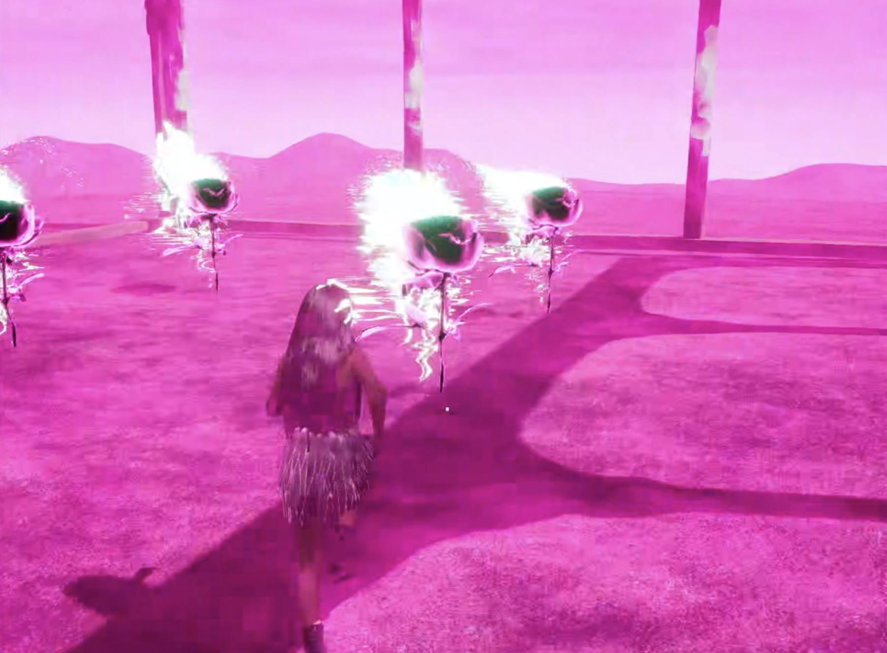
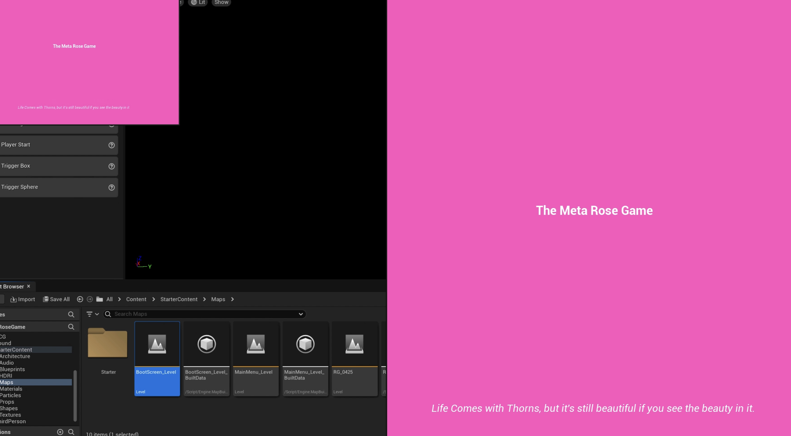
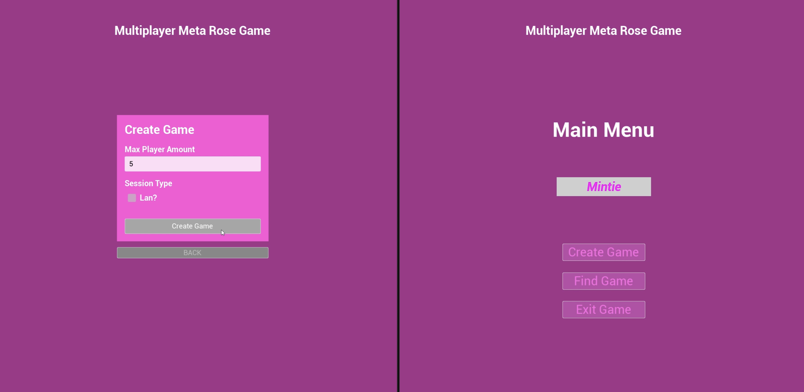
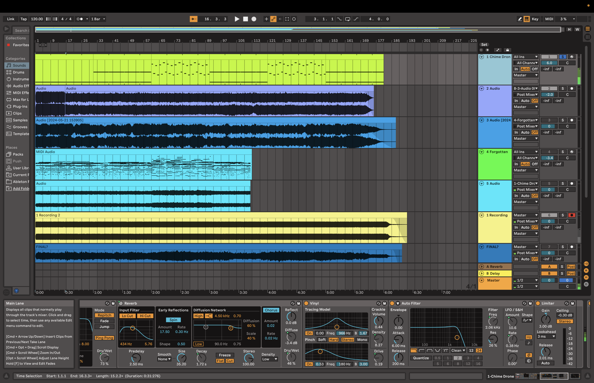
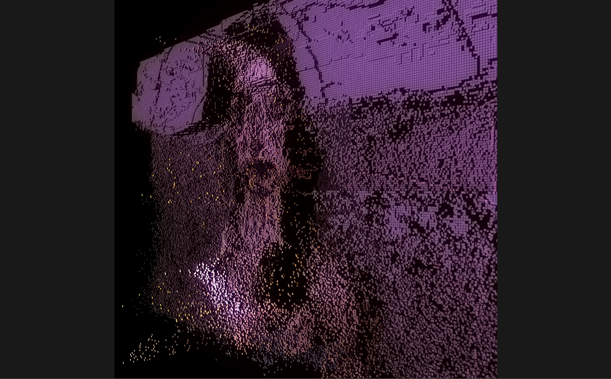

WEEK 10
1305 - 1905WORK PROGRESS
Artwork 4&5: Unreal Game + TouchDesigner


Game:
This week, I’ve worked on finishing touches on the game.
There are two Niagara effects used in the map, one for the shooting and one for the portal. I’ve updated both.
The shooting event is one of the main interactions players have with each other in this multiplayer game, so I wanted to create a more visually appealing effect for the shooting. Likewise, the portal effect was also updated to be more visually appealing. It is definitely a bit heavier in terms of FPS, but I think it adds significantly to the game experience.


I’ve designed a few post-processing volumes (PPC).
In the pink world, where the arch is, this PPC is set along the boundaries of the arch. When players are in this area, it triggers an effect that is added to the player’s game view. It has high saturation, which turns pink into an even more vivid pink, and includes some reflective effects on the objects, making them look more magical—like a magical healing place!
Another PPC in the pink world is placed in the lake. It has a wavy underwater effect to make it look like the players are underwater. I’ve made the effect subtle, not too distorted.
The last PPC is placed throughout the entire underwater map. It is similar to the one in the lake, with a wavy distortion effect. However, this one is a bit stronger since the entire map is set underwater and represents a world of distortions. With the wave lighting, it definitely adds a more immersive feeling to the underwater experience.
 
Now that the game itself is complete, I added the multiplayer function for creating, finding, and joining sessions, as well as the boot screen, which is the very first screen of the game and leads to the main menu of sessions.
The boot screen features a title and a simple introduction to the game: “Life comes with thorns, but it’s still beautiful if you choose to see the beauty in it.” It then automatically connects to the main menu, where you can create, find, and join sessions for multiplayer.

For the multiplayer system, I’ve also added a feature to input players' names in the main menu. Even though there are no options to choose outfits or change characters, this still differentiates the players from each other. Ensuring that these functions are well replicated to the server and the clients so that all players can see each other with name tags was crucial.
Replication in a multiplayer game is definitely challenging. Making a game itself involves a lot of troubleshooting, but making it a multiplayer game is a whole other level of troubleshooting! Since there is a server that hosts the session and clients who join the server, all the information has to be scripted properly to ensure that the server and the clients are communicating the information correctly so that players have replicated data when they are playing.

For the sound, the ambient tracks for the pink world and the underwater world are completed and added to the map. I’ve also designed shooting sounds for the pink rose and the chrome rose. I’ve used the same sound effects for all the healing actors, triggering whenever health is increased and vice versa. Other sound effects have been added as well, including footsteps, opening boxes, picking up roses, and when players respawn after being defeated.
Now that the game is complete with the multiplayer system, I’m going to test packaging and try to upload it via pixel streaming so it can be played in the browser. I think it’s going to be really challenging, as I know the game is heavy, and I still need to do a lot more research on how to implement a multiplayer game with pixel streaming so it can be played as a multiplayer game in the browser.
Fingers crossed!

With the TouchDesigner piece, I’ve also worked on the last visual using a point cloud system. I’ve used 3D rendered images of Mintie and screenshots from the game as the source images. These can be switched as well, and there are about eight visuals that the audience can choose from. With added noises, the camera movement is automated to display different angles of the point cloud system's view. The movement will also follow the speed of the song that will be played.